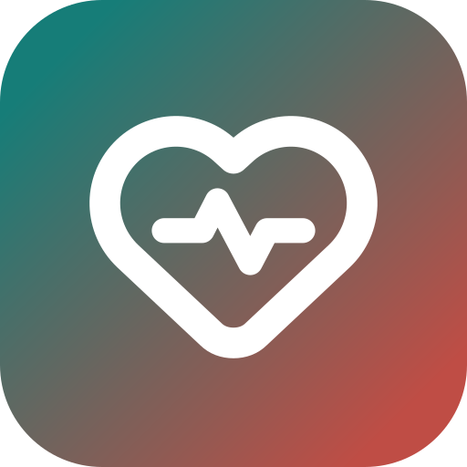
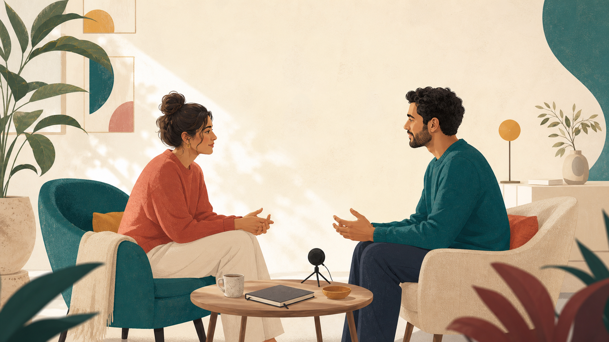

Couple Lab קוד המקור ב־GitHubCouple Lab היא אפליקציה לזוגות: בוחרים שאלה, מקיימים שיחה מונחית, ומקבלים סיכום עדין. הכול רץ על המחשב שלכם, ושום דבר לא עולה לאינטרנט.
חינם · קוד פתוח (MIT) · ל־Windows 10 ו־11 (64 ביט)

תשע חפיסות של שאלות לשיחה, בהשראת גוטמן, שעוזרות להתקרב ולהכיר מחדש.
שיחה צעד אחר צעד: אחרי ריב, או כשאחד מכם עמוס וצריך הקשבה. יש תורות ברורים וזמנים.
אם שניכם מסכימים, השיחה מוקלטת ומתומללת. בסוף רואים מי דיבר כמה ואילו רגעים חשובים עלו.
אין חשבון ואין שרת. ההקלטות, התמלולים והסיכומים נשמרים רק במחשב שלכם, ואפשר למחוק אותם בכל רגע.
Couple Lab היא כלי לתרגול, לא טיפול זוגי ולא אבחון. היא לא שופטת מי צודק. אם יש פגיעה או סכנה, פנו לאיש מקצוע.
Couple-Lab-Windows.exe מהכפתור למעלה.הגרסה הניידת מתמללת עם מנוע קטן ומהיר. זה מספיק לסיכום, אבל לא מדויק בעברית. כדי לקבל תמלול טוב בהרבה (מודל ivrit-ai שרץ אצלכם במחשב), מריצים את האפליקציה מקוד המקור. עדיף מחשב עם כרטיס מסך NVIDIA. בלי כרטיס כזה זה עובד, אבל לאט יותר.
צריך Node.js 20+, Python 3.11 ו־Git. אחר כך ב־PowerShell:
git clone -b local-hebrew https://github.com/agmonp/couple-lab.git
cd couple-lab
npm install
powershell -ExecutionPolicy Bypass -File .\scripts\install-hebrew-asr.ps1
npm run desktop:runההתקנה מורידה פעם אחת מודל של כ־1.6GB. את קובצי המודלים הקטנים (תיקיית models) לוקחים מתוך הגרסה הניידת, או לפי models/README.md.